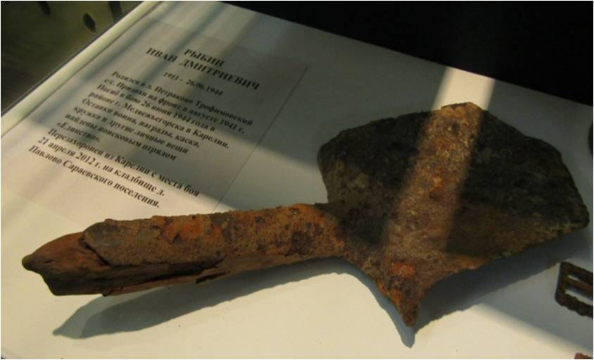

Рыбин Иван Дмитриевич
Рыбин Иван Дмитриевич, родился в 1911 году в деревне Патраково Бобровско-Захаровской волости
(ныне Трофимовское сельское поселение). Иван Дмитриевич был призван в Красную Армию в августе 1941 года.
Служил и воевал в 1072 стрелковом полку 313 стрелковой Краснознаменной Петрозаводской дивизии 32 армии
Карельского фронта. Заместитель командира отделения, наводчик ручного пулемета 8 стрелковой роты, ефрейтор.
Погиб 26 июня 1944 года. Поисковым отрядом «Единство» в пригороде Медвежьегорска были найдены
останки погибшего воина на месте боя, среди которых находился медальон с адресатом:
«Адрес мой: Вологодская область, Кичм.Городецкий район, Трофимовское почтовое отделение, д. Петраково,
Рыбиной Арине Васильевне. Муж ее Иван Дмитриевич Рыбин» .
Также были найдены медаль «За отвагу» и знак «Отличный пулеметчик».
Останки и смертный медальон нашел поисковик Денис Исаенок. Перезахоронение произведено 21.04.2012 г.
на кладбище в д. Павлово рядом с могилой жены Арины (Ирины) Васильевны
Личные вещи Рыбина Ивана Дмитриевича
Саперная лопатка Рыбина Ивана Дмитриевича